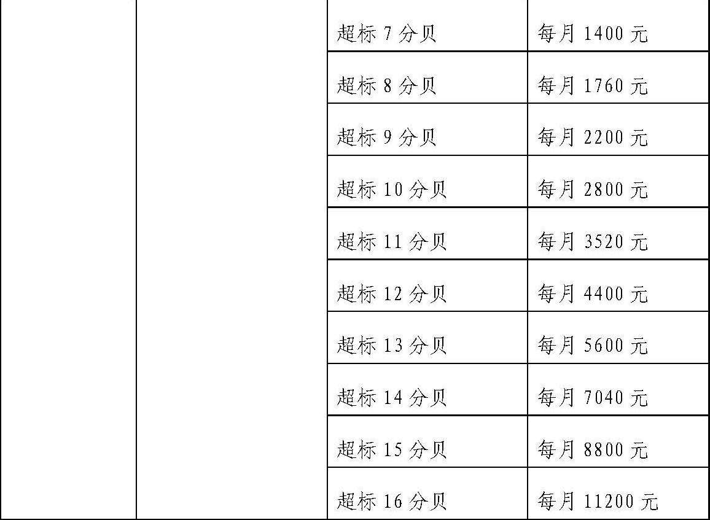
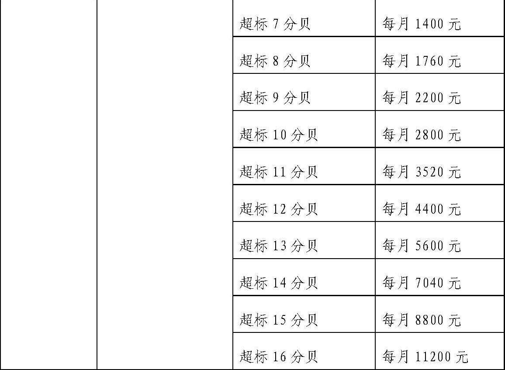

|
资料名称：中华人民共和国环境保护税法（征求意见稿）
|
| 手机阅读请扫我 |
|
中华人民共和国环境保护税法（征求意见稿） 第一章 总则 第一条 为保护和改善环境,促进社会节能减排，推进生态文明建设，制定本法。 第二条 在中华人民共和国领域以及管辖的其他海域，直接向环境排放应税污染物的企业事业单位和其他生产经营者为环境保护税的纳税人，应当依照本法规定缴纳环境保护税。 第三条 本法所称应税污染物是指大气污染物、水污染物、固体废物、建筑施工噪声和工业噪声以及其他污染物。
第四条 环境保护税的税目、税额，依照本法所附《环境保护税税目税额表》执行。
第二章 计税依据 第五条 应税污染物的计税依据，按照下列方法确定：
第六条 应税大气污染物、水污染物的污染当量数，以该污染物的排放量（千克）除以该污染物的污染当量值（千克）计算。每种应税大气污染物、水污染物的具体污染当量值，依照本法所附《应税污染物和当量值表》执行。 第七条 每一排放口的应税大气污染物，按照污染当量数从大到小排序,对前3项污染物征收环境保护税。
第八条 应税大气污染物、水污染物和固体废物的排放量，工业噪声的分贝数，按照下列分类方法计量：
第三章 应纳税额 第九条 环境保护税应纳税额按照下列方法计算：
第十条 具有以下排放应税大气污染物和水污染物情形的，加倍征收环境保护税：
第四章 税收优惠 第十一条 下列情形，免征环境保护税：
第十二条 纳税人排放应税大气污染物和水污染物的浓度值低于国家或者地方规定污染物排放标准50%以上，且未超过污染物排放总量控制指标的，省、自治区、直辖市人民政府可以决定在一定期限内减半征收环境保护税。 第十三条 国务院根据社会公共利益的特殊需要或者应对重大突发事件，可以制定环境保护税专项优惠政策，报全国人民代表大会常务委员会备案。 第十四条 各级政府应当鼓励企业事业单位和其他生产经营者加大环境保护建设投入，对企业事业单位用于污染源自动监控专用设备的投资予以资金和政策支持。 第五章 征收管理 第十五条 环境保护税由税务机关依照《中华人民共和国税收征收管理法》和本法的有关规定征收管理。
第十六条 环境保护税的纳税义务发生时间为纳税人排放应税污染物的当日。 第十七条 纳税人应当向应税污染物排放地的主管税务机关申报缴纳环境保护税。 第十八条 环境保护税按月、按季或者按年计征，由主管税务机关根据实际情况确定。不能按固定期限计算纳税的，可以按次申报纳税。 第十九条 纳税人应当自纳税期限届满之日起15日内，向主管税务机关办理纳税申报并缴纳税款。纳税人应当对申报的真实性和合法性承担责任。 第二十条 环境保护税按照重点监控（排污）纳税人和非重点监控（排污）纳税人进行分类管理。
第二十一条 主管税务机关结合纳税申报资料和环境保护部门出具的审核意见，依照《中华人民共和国税收征收管理法》的有关规定调整纳税人应纳税额。纳税人在下一期纳税申报时，一并办理纳税事项的调整。
第二十二条 主管税务机关在税收征管中发现纳税人有下列情形的，可以提请环境保护主管部门对纳税人的污染物排放情况进行审核，环境保护主管部门自收到税务机关资料之日起30日内向税务机关出具审核意见：
第二十三条 环境保护主管部门应当根据税务部门的征管工作需求，及时将排污单位名录及排污资料信息、排污单位污染物排放监测数据信息、审核确认信息和排污许可信息、排污单位环境违法和受行政处罚情况等信息，送达主管税务机关。
第二十四条 纳税人从事海洋工程向中华人民共和国管辖海域排放应税大气污染物、水污染物和固体废物的，比照本法相关规定申报缴纳环境保护税。具体纳税申报事项由国务院税务主管部门会同海洋主管部门规定。 第二十五条 省、自治区、直辖市人民政府可以依据本法规定及实际情况制定环境保护税具体管理办法。
第二十六条 纳税人未按规定向税务机关申报纳税，税务主管部门和环境保护主管部门及工作人员违反本法规定造成重大损失的，依照《中华人民共和国税收征收管理法》《中华人民共和国环境保护法》和相关法律法规的规定予以处罚。 第六章 附则 第二十七条 本法所称重点监控（排污）纳税人，指火电、钢铁、水泥、电解铝、煤炭、冶金、建材、采矿、化工、石化、制药、轻工（酿造、造纸、发酵、制糖、植物油加工）、纺织、制革等重点污染行业的纳税人及其他排污行业的重点监控企业。
第二十八条 本法施行后，对依照本法规定征收环境保护税的，不再征收排污费。原由排污费安排的支出纳入财政预算安排。 第二十九条 国务院根据本法制定实施条例。 第三十条 本法自 年 月 日起施行。 附表1：环境保护税税目税额表
附表2：应税污染物和当量值表 一、第一类水污染物污染当量值 二、第二类水污染物污染当量值
三、PH值、色度、大肠菌群数、余氯量污染当量值
说明：
四、禽畜养殖业、小型企业和第三产业污染当量值
五、大气污染物污染当量值
（2018.06.12更新） |
 
 说明：
说明：
 说明：
说明：
|
声明 本资料来源于网络，版权归原作者所有，若需引用请注明出处，引用前请与原件进行核对，请勿用于商业用途！ |
|
声明 本资料来源于网络，版权归原作者所有，若需引用请注明出处，引用前请与原件进行核对，请勿用于商业用途！ |
| 分享按钮 |
|
微信扫一扫前往微店 |
|
|
|
|